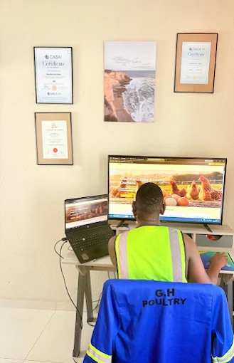
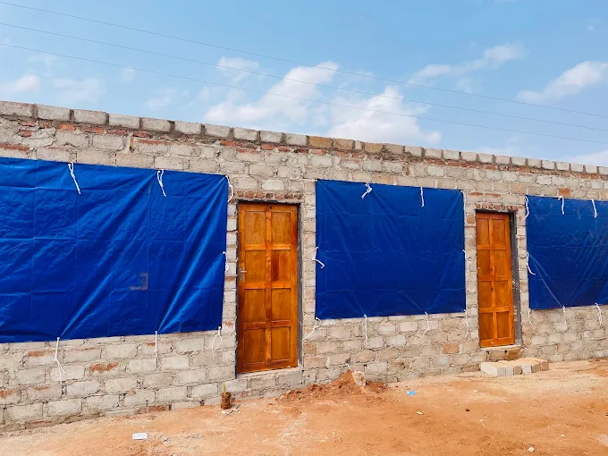
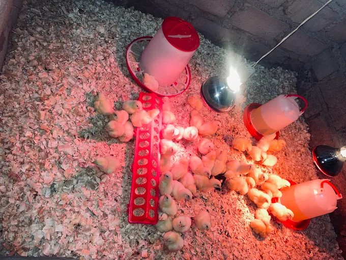

GH Poultry was founded in response to the rising cost of poultry products following industry challenges such as disease outbreaks and supply chain disruptions. Our goal is to provide customers with fresh, high-quality poultry products at affordable prices. Through efficient cost management, strong industry relationships, and a commitment to poultry health and disease prevention, we aim to deliver exceptional value while maintaining the highest standards of quality and service.

GH Poultry combines professional business management with practical agricultural operations. From strategic planning and operational execution to continuous improvement, we are committed to building a sustainable poultry enterprise that delivers value to customers, communities and future generations.
To become a leading and sustainable poultry producer in our communities
To deliver quality poultry products through sustainable farming, disease prevention, and operational excellence.
We are committed to producing safe, nutritious, and high-quality poultry products that consistently meet customer expectations.
We strive to contribute to food security, economic growth, and improved livelihoods within the communities we serve.
We continuously improve our farming practices, disease prevention measures, and operational efficiency to deliver lasting value to our customers.
GH Poultry continues to invest in quality poultry infrastructure designed to support bird health, biosecurity and operational excellence.
Our facility provides a safe and comfortable environment for poultry production while supporting future growth and expansion.

GH Poultry production facility at the commencement of operations.
In September 2026, GH Poultry welcomed its first broiler flock. The arrival of our first chicks marked the beginning of our journey towards producing quality poultry products for households, retailers and businesses.

GH Poultry's first broiler flock upon arrival.